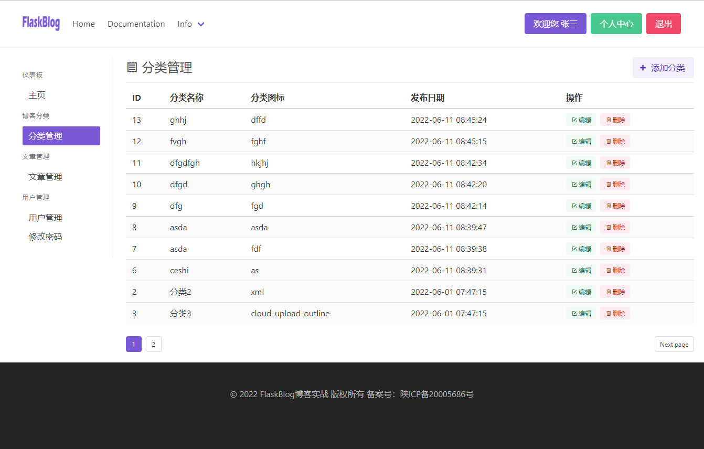
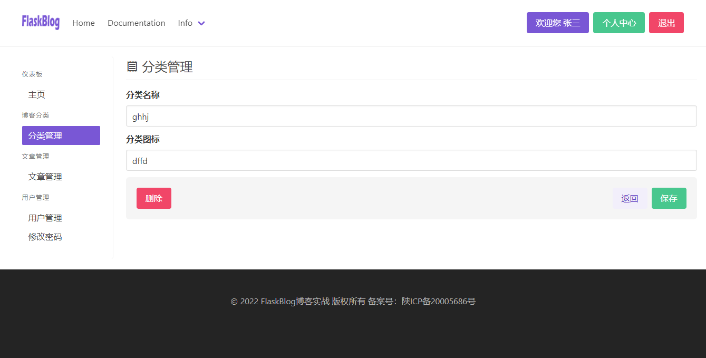

实现博客的分类管理
一般的后台管理都包含了该模块的增删改查的基本操作，我们也是以这样的思路先去简单的实现博客分类的增删改查操作！
- 最终效果如下：
 
实现查看分类列表
基本的逻辑思路是：查询出所有分类列表数据，并对其分页！
在app/admin/views.py中创建分类列表视图，代码如下：
@bp.route('/category')
@login_required
def category():
# 查看分类
page = request.args.get('page', 1, type=int)
pagination = Category.query.order_by(-Category.add_date).paginate(page, per_page=10, error_out=False)
category_list = pagination.items
return render_template('admin/category.html', category_list=category_list, pagination=pagination)
这里的这个login_required装饰器就是我们对该视图进行了验证，只有登录的用户才可以访问！
page = request.args.get('page', 1, type=int)
这行代码是说从一个GET请求中获取一个page的参数，默认值是1，类型必须为int，那么最终反映到url当中就是这样的：http://127.0.0.1:5000/admin/category?page=1这个page的值就是
pagination = Category.query.order_by(-Category.add_date).paginate(page, per_page=10, error_out=False)
这行代码查询出所有的分类数据，通过order_by()方法按照发布时间进行倒序排列，在使用paginate()方法进行分页，per_page=10代表每页显示数量，超过该设置的数量则进行分页，error_out=False代表是否访问不存在的分页时显示错误页面，False是不显示！
category_list = pagination.items 获取分页后的数据！
这里最后我们将pagination和category_list传入到上下文中，这样就可以在模板中使用这两个数据进行查新显示！
创建列表页html模板
在app/admin/templates/admin/目录下创建category.html模板
{% extends 'admin/index.html' %}
{% block member %}
<div class="is-block">
<div class=" is-pulled-left">
<h1 class=" is-size-4">
<span class="icon">
<i class="mdi mdi-receipt-outline"></i>
</span>
分类管理
</h1>
</div>
{% block button %}
<div class=" is-pulled-right">
<a href="" class=" button is-primary is-light">
<span class="icon"><i class="mdi mdi-plus-thick"></i></span>
<span>添加分类</span>
</a>
</div>
{% endblock button %}
<div class="is-clearfix"></div>
<div class=" dropdown-divider"></div>
<!-- 消息闪现 -->
{% with messages = get_flashed_messages() %}
<b-message type="is-success">
{% if messages %}
<ul class=flashes>
{% for message in messages %}
<li>{{ message }}</li>
{% endfor %}
</ul>
{% endif %}
</b-message>
{% endwith %}
</div>
{% block table_content %}
<div class="table-container">
<table class="table is-fullwidth is-hoverable is-striped">
<thead>
<tr>
<th>ID</th>
<th>分类名称</th>
<th>分类图标</th>
<th>发布日期</th>
<th>操作</th>
</tr>
</thead>
<tbody>
{% for cate in category_list %}
<tr>
<td>{{ cate.id }}</td>
<td>{{ cate.name }}</td>
<td>{{ cate.icon }}</td>
<td>{{ cate.add_date }}</td>
<td>
<div class="tags">
<a href="" class="tag is-success is-light">
<span class="icon">
<i class="mdi mdi-square-edit-outline"></i>
</span>
编辑
</a>
<a href="" class="tag is-danger is-light">
<span class="icon">
<i class="mdi mdi-trash-can-outline"></i>
</span>
删除
</a>
</div>
</td>
</tr>
{% endfor %}
</tbody>
</table>
</div>
<nav class="pagination is-small" role="navigation" aria-label="pagination">
{% if pagination.has_prev %}
<a href="{{ url_for('admin.category') }}?page={{ pagination.prev_num }}" class="pagination-previous" title="This is the first page">Previous</a>
{% endif %}
{% if pagination.has_next %}
<a href="{{ url_for('admin.category') }}?page={{ pagination.next_num }}" class="pagination-next">Next page</a>
{% endif %}
<ul class="pagination-list">
{% for page in pagination.iter_pages() %}
{% if page %}
{% if page != pagination.page %}
<li>
<a href="{{ url_for('admin.category') }}?page={{ page }}" class="pagination-link" aria-label="Page 1" aria-current="page">{{ page }}</a>
</li>
{% else %}
<li>
<a class="pagination-link is-current" aria-label="Page 1" aria-current="page">{{ page }}</a>
</li>
{% endif %}
{% else %}
<span class=pagination-ellipsis>…</span>
{% endif %}
{% endfor %}
</ul>
</nav>
{% endblock table_content %}
{% endblock member %}
这个模板中分页处几个关键点需要说明一下：
pagination.has_prev判断是否有上一页，返回值是True或Flase
pagination.prev_num返回上一页的页码
pagination.has_next判断是否有下一页，返回值是True或Flase
pagination.next_num返回下一页的页码
pagination.iter_pages(left_edge=2， left_current=2， right_current=5， right_edge=2)这个循环访问分页中的页码。这四个参数控制阈值，即应从侧面生成多少个数字。
实现添加博客分类
提到添加和修改，自然是离不开表单，那么第一步就是先创建表单类！
在app/admin/forms.py中创建Category的表单类
from flask_wtf import FlaskForm
from wtforms import StringField
from wtforms.validators import DataRequired, Length
class CategoryCreateForm(FlaskForm):
# 分类表单
name = StringField('分类名称', validators=[
DataRequired(message="不能为空"),
Length(max=128, message="不符合字数要求！")
])
icon = StringField('分类图标', validators=[
Length(max=256, message="不符合字数要求！")
])
在app/admin/views.py中创建新增分类视图
@bp.route('/category/add', methods=['GET', 'POST'])
@login_required
def category_add():
# 增加分类
form = CategoryCreateForm()
if form.validate_on_submit():
category = Category(name=form.name.data, icon=form.icon.data)
db.session.add(category)
db.session.commit()
flash(f'{form.name.data}分类添加成功')
return redirect(url_for('admin.category'))
return render_template('admin/category_form.html', form=form)
这个增加分类的逻辑和注册用户的逻辑基本一致，这里就不再过多的赘述每行代码的意思！
创建表单模板
在app/admin/templates/admin/目录下创建一个category_form.html
{% extends 'admin/category.html' %}
{% block button %}{% endblock button %}
{% block table_content %}
<form action="" method="post" class="mt-4">
{{ form.csrf_token }}
<div class="field">
{{ form.name.label(class='label') }}
<div class="control">
{{ form.name(class='input', placeholder='分类名称') }}
</div>
</div>
<div class="field">
{{ form.icon.label(class='label') }}
<div class="control">
{{ form.icon(class='input', placeholder='分类图标') }}
</div>
</div>
<div class="is-block">
<div class="box has-background-light is-shadowless level">
<a href="" class=" is-danger button level-left">删除</a>
<div class="level-right">
<a href="{{ url_for('admin.category') }}" class="button is-primary is-light mr-2">返回</a>
<input type="submit" value="保存" class=" button is-success">
</div>
</div>
</div>
</form>
{% endblock table_content %}
最后修改添加分类按钮的url即可：
路径：app/admin/templates/admin/category.html
{% block button %}
<div class=" is-pulled-right">
<a href="{{ url_for('admin.category_add') }}" class=" button is-primary is-light">
<span class="icon"><i class="mdi mdi-plus-thick"></i></span>
<span>添加分类</span>
</a>
</div>
{% endblock button %}
实现修改博客分类
修改的思路基本和保存的思路一致，唯一不同的是修改时需要在表单内回显数据，并且修改的是当前数据对象！
路径：app/admin/views.py
@bp.route('/category/edit/<int:cate_id>', methods=['GET', 'POST'])
@login_required
def category_edit(cate_id):
# 增加分类
category = Category.query.get(cate_id)
form = CategoryCreateForm(name=category.name, icon=category.icon)
if form.validate_on_submit():
category.name = form.name.data
category.icon = form.icon.data
db.session.add(category)
db.session.commit()
flash(f'{form.name.data}分类修改成功')
return redirect(url_for('admin.category'))
return render_template('admin/category_form.html', form=form)
这里的代码也非常简单，首先是在url中和函数中传入了需要修改的当前分类id主键，再通过主键通过get的方式直接查询到该条信息！
回显数据到表单，这里单独说一下，只需要将个字段的值赋值给表单类即可：
form = CategoryCreateForm(name=category.name, icon=category.icon)
这样我们的增加数据和修改数据就可以通用一个表单模板和表单类！
之后的修改操作我们在增删改查以及注册用户的时候做了详细的解说，这里大家就自行理解下！
最后，只需要在每条数据的编辑按钮引入该url即可
<a href="{{ url_for('admin.category_edit', cate_id=cate.id) }}" class="tag is-success is-light">
<span class="icon">
<i class="mdi mdi-square-edit-outline"></i>
</span>
编辑
</a>
实现删除博客分类
这里的删除方案有两种，一种是直接通过get请求删除，只要点击这个删除链接数据就从数据库清除掉；另外一种方案是通过post请求删除，这种就可以在创建一个删除确认页通过get请求展示，问是否要真的删除，然后改页的确认按钮才是真正的发送post请求去删除数据@！
那么，为了演示，我们这里采用第一种get的方式！
在app/admin/views.py中创建删除视图
@bp.route('/category/delete/<int:cate_id>', methods=['GET', 'POST'])
@login_required
def category_del(cate_id):
# 增加分类
category = Category.query.get(cate_id)
if category:
db.session.delete(category)
db.session.commit()
flash(f'{category.name}分类删除成功')
return redirect(url_for('admin.category'))
这个删除和编辑的逻辑基本一致，在url中传入当前分类的id主键，通过主键获取到该条数据，如果该条数据存在，则执行删除操作，这样做的好处就是不需要再去访问一次确认页，访问该url就可以直接删除，弊端就是没有后悔的余地，误删的后果就得自己承担了！
最后，在删除按钮上增加该url即可
<a href="{{ url_for('admin.category_del', cate_id=cate.id) }}" class="tag is-danger is-light">
<span class="icon">
<i class="mdi mdi-trash-can-outline"></i>
</span>
删除
</a>
到这里，我们对博客分类的增删改查就基本做完了，掌握的比较好的同学就可以模仿着去实现一下文章管理的增删改查咯！